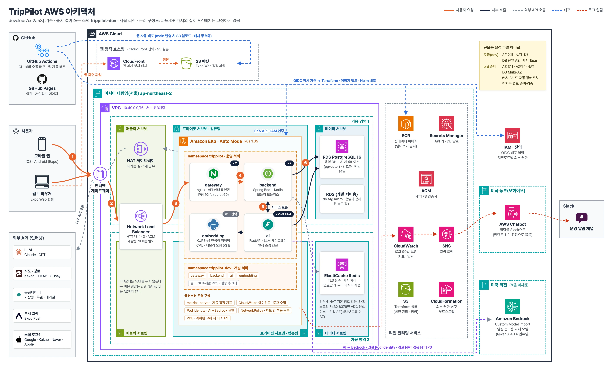

여행 앱 하나가
돌아가려면
TripPilot이 AWS 위에서 어떻게 돌아가는지
처음부터 하나씩 따라가 볼게요.
오늘 둘러볼 곳은 열 군데예요
뭘 하나
클라우드인가
네트워크
여행
쿠버네티스
비밀번호
알아채는 법
예약 다음부터를 책임지는 여행 앱이에요
둘러보고 저장
가고 싶은 숙소와 장소를 모아 둬요.
AI가 일정 짜기
모아 둔 곳으로 날짜별 동선을 만들어 줘요.
비 오면 Plan B
날씨나 휴무 때문에 틀어지면 대안을 내밀어요.
다녀와서 회고
여행 기록을 정리하고 돌아보게 해 줘요.
예약과 결제는 직접 하지 않아요. 제휴 여행사(OTA) 링크로 넘겨요.
그래서 서버가 할 일이 생각보다 많아요. 일정을 짜고 날씨를 확인하고 알림까지 보내야 하거든요. 이걸 하루 종일 받아 줄 곳이 필요했어요.
내 노트북으로 서버를 돌리면 안 될까요?
- 1노트북을 덮으면 서비스도 멈춰요서버는 24시간 켜져 있어야 해요.
- 2사용자가 몰리면 버티지 못해요필요할 때 컴퓨터를 더 붙일 수 있어야 해요.
- 3고장 나면 고칠 때까지 끝이에요망가진 장비를 바로 갈아 끼울 수 있어야 해요.
컴퓨터·네트워크·DB를
쓴 만큼 빌려 쓰는 곳
리전은 도시예요. 우리는 서울 리전을 써요.
가용 영역(AZ)은 같은 도시 안에서 서로 떨어져 있는 데이터센터 묶음이에요. 한 곳에 정전이 나도 다른 곳은 살아 있게요. 지금은 두 곳에 나눠 둬요.
한 장으로 보면 이래요

겁먹을 필요 없어요. 오늘은 이 그림을 여섯 조각으로 나눠서 볼 거예요.
주황색 번호 1~6은 사용자 요청이 지나가는 길이에요.
앱 → NLB → gateway → backend → ai · DB
그림을 클릭하면 크게 볼 수 있어요.
VPC는 우리 회사 건물이라고
생각하면 쉬워요
바깥 길과 맞닿은 유일한 층이에요. 손님이 들어오는 정문(로드밸런서)과 직원만 쓰는 뒷문(NAT)이 여기 있어요.
서버들이 실제로 일하는 곳이에요. 길에서 곧장 올라올 방법이 없어요.
DB가 있는 곳이에요. 인터넷으로 바로 나가는 문이 아예 없어요.
"사무실 층 사람만 금고에 들어갈 수 있다" 같은 규칙이에요.
'일정 만들어 줘'를 누르면
생기는 일
- 1정문 통과 — 앱의 요청이 인터넷 게이트웨이로 AWS에 들어와요.
- 2로드밸런서(NLB) — HTTPS 암호를 풀고 일할 서버로 나눠 보내요.인증서는 ACM이 관리해요.
- 3안내 데스크(nginx) — API 요청만 들여보내요.API는 앱이 서버에 일을 부탁하는 창구예요. 같은 IP가 1초에 10번 넘게 계속 두드리면 속도를 늦춰요.
- 4backend(Spring Boot) — 로그인 확인, 여행 정보 조회 같은 본업을 해요.
- 5ai(FastAPI) — 일정 짜기를 맡아요.취향 판단은 LLM(글을 이해하고 쓰는 AI 모델)이, 시간·순서 계산은 알고리즘이 해요.
- 6DB 저장 — 완성된 일정을 PostgreSQL에 넣고 앱으로 돌려줘요.
서버를 직접 깔지 않고 '컨테이너'로 띄워요
컨테이너는 도시락이에요. 앱과 필요한 라이브러리를 한 통에 담아서 어느 서버에서 열어도 같은 재료가 들어 있어요.
쿠버네티스는 도시락 배달 관제실이에요. 도시락을 파드라는 단위로 묶어서 몇 개를 띄울지, 상하면 새로 띄울지, 어느 책상에 놓을지 정해요.
EKS는 그 관제실을 AWS가 대신 운영해 주는 서비스예요. 저희는 Auto Mode를 써서 책상(서버)을 고르고 바꾸는 일까지 맡겼어요.
nginx
안내 데스크
Spring Boot
Kotlin 본업 서버
FastAPI
바쁘면 알아서 늘어나요
KURE-v1
필요할 때만 켜요
하나는 언제든 죽는다고 보고 만들어요
두 개씩 띄우기
운영 서버의 gateway·backend·ai는 둘 이상 띄워 둬요.
교체 중에도 하나는
계획해서 서버를 갈아 끼울 때는 최소 하나를 남겨 둬요.
바쁘면 늘리기
ai는 평균 CPU 사용률 70%를 목표로 2~3대 사이에서 늘었다 줄었다 해요.
새 것 먼저 띄우기
gateway·backend·ai는 새 버전이 준비된 걸 확인한 뒤에 옛 버전을 내려요.
출시하고 보니 Auto Mode가 하루에 두 번이나 서버를 갈아 끼우더라고요. 파드가 하나뿐이면 그때마다 앱이 잠깐 멈춰요. 그래서 둘로 늘리고 교체 중에도 최소 하나는 남도록 규칙을 걸었어요. 물론 갑자기 터지는 장애까지 다 막아 주진 않아요.
데이터는 지하 금고에 둬요
사용자·여행 데이터, AI 지식베이스까지
자주 찾는 걸 잠깐 기억해 두는 캐시
솔직히 아직은 자리만 만들어 뒀어요. 연결 설정은 끝났고 코드에서 쓰기 시작하면 바로 켜져요.
DB에서 제일 무서운 건 해킹보다 실수예요.
그래서 운영 DB는 보호 스위치를 풀어도 마지막 스냅숏(DB 사진)과 자동 백업이 꼭 남도록 Terraform 코드에 박아 뒀어요. 제일 급한 순간에 제일 급한 사람이 복구 수단까지 날려 버리면 안 되니까요.
AI 혼자 다 하게 두지 않아요
Claude · GPT
취향을 판단하고 이유를 설명해요. NAT를 거쳐 밖으로 불러요.
시간·순서는 계산으로
LLM이 말한 시간은 그대로 믿지 않아요. 최적화 알고리즘이 검증한 값만 보여 줘요.
KURE-v1
"강남 맛집"과 "서울 남부 음식점"처럼 뜻이 비슷한 문서를 찾아요. 메모리를 4GiB 넘게 먹어요.
우리 전용 작은 모델
Qwen3-4B를 우리 데이터로 다듬어 알림 문구 한 줄을 써요. 한동안 요청이 없으면 추론 용량이 0으로 줄어요.
4B(매개변수 40억 개)짜리 작은 모델이 교사 역할을 한 235B 모델과 알림 문구 블라인드 비교에서 12:8로 이겼어요. 좁은 일에는 작은 전문가가 낫더라고요.
LLM이 먹통이 돼도 앱은 멈추지 않아요. 규칙 기반으로 바로 넘어가는 대체 경로가 늘 있거든요.
코드에 비밀번호를 한 줄도 적지 않아요
OIDC
배포할 때마다 두 시간짜리 임시 출입증을 받아요. 저장소에는 AWS 키가 없어요.
Pod Identity
AI 파드들에만 '모델 호출' 권한 딱 하나를 줘요. 키 파일도 없어요.
Secrets Manager
인프라 기록 파일(state)에는 안 남겨요. 배포할 때 보관함에서 꺼내 쿠버네티스 Secret으로 넘겨요.
열쇠를 복사해서 나눠 주는 대신,
필요할 때마다 기한이 정해진 출입증을 끊어 준다고 생각하면 돼요.
인프라도 코드로 짜고 서버 배포 버튼은 사람이 눌러요
네트워크부터 알람까지 코드로
핵심 인프라는 콘솔에서 손으로 만들지 않아요. 바뀌는 내용을 코드 리뷰로 먼저 봐요.
main 브랜치만 운영으로
정기 배포는 최근 72시간 안에 개발 서버 배포에 성공한 코드와 같아야 나가요. 긴급 수정은 이슈 번호와 사유를 남겨요.
push하면 바로 배포되는 게 멋있어 보이죠. 서버는 일부러 안 했어요. 누가 언제 눌렀는지가 분명한 게 더 중요하거든요. 웹 화면 파일만 main에 합쳐지면 자동으로 나가요.
운영 서버와 개발 서버는 한 지붕 두 가족이에요
trippilot
운영 서버 · 출시 앱이 보는 곳
main 브랜치에서만 배포
DB · 비밀값 · 주소 따로
trippilot-dev
개발 서버 · 새 기능 확인용
develop 브랜치에서만 배포
작은 DB를 따로 둬요
같이 쓰는 것: 클러스터 · NAT · Redis
- ✓같이 쓰는 건 같이클러스터와 네트워크를 한 벌만 둬서 비용을 아껴요.
- ✓섞이면 안 되는 건 따로개발 DB를 따로 둬서 개발 중 데이터 변경과 부하가 운영 DB로 번지지 않아요.
- ✓개발 서버는 평소 0대검증에 성공하면 다시 재워요. DB는 그대로 둬요.
제일 무서운 건 '조용한' 실패예요
5분에 10건 이상
계정 탈취 신호, 1건이라도
30분에 5건 이상
재시작이 늘거나 노드가 10분 넘게 멈추면
CPU · 저장공간 · 연결 수
10월 28일, 외부 LLM 인증 키에 문제가 생겨서 하루 동안 AI 호출 383건이 전부 실패했어요. 그런데 울린 알람은 0건이었어요. 앱은 대체 경로로 멀쩡히 응답했거든요.
그래서 'LLM 호출 실패' 알람을 새로 만들었어요.
전부 두 벌씩 둘 수는 없었어요
| 항목 | 지금 상태 | 이렇게 한 이유 | 대신 감수한 것 |
|---|---|---|---|
| NAT 게이트웨이 | 1개를 같이 써요 | 개수만큼 시간당 요금이 붙어요 | 그 AZ가 멈추면 외부 API 호출도 끊겨요 |
| DB | 가용 영역 1곳 | Multi-AZ는 비용이 거의 두 배예요 | 장애 때 복구가 더 걸려요(데이터는 백업이 지켜요) |
| 개발 서버 | 평소엔 0대 | 임베딩 하나가 큰 서버를 통째로 잡아요 | 검증 전에 켜는 시간이 들어요 |
| prd 스택 | 보류 | 지금 규모에선 과해요 | 규모 설정은 준비해 뒀어요. 옮길 땐 데이터 전환을 따로 준비해야 해요 |
자원도 감으로 잡지 않아요. 3일 치 실측을 보고 backend CPU 요청을 500m에서 200m로 줄였어요. prd 설정 파일에는 이미 AZ 3곳, AZ마다 NAT, Multi-AZ DB가 적혀 있어요.
오늘은 딱 다섯 가지만 기억해 주세요
네트워크는 층으로 나눈다
하나는 언제든 죽는다
비밀은 코드에 두지 않는다
인프라도 코드로 리뷰한다
조용한 실패를 경계한다
직접 해 보기
AWS 프리 티어로 VPC 하나 만들어 보기 · kind로 노트북에 쿠버네티스 띄워 보기 · Terraform 공식 튜토리얼 따라 하기
오늘 나온 용어 한눈에
궁금한 거
편하게 물어보세요
구조도 원본과 설정 파일은 모두 저장소에 있어요.
infra/terraform · deploy/eks/chart · .github/workflows